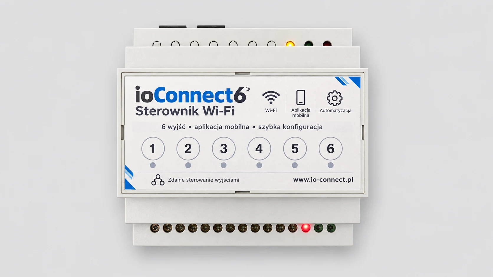
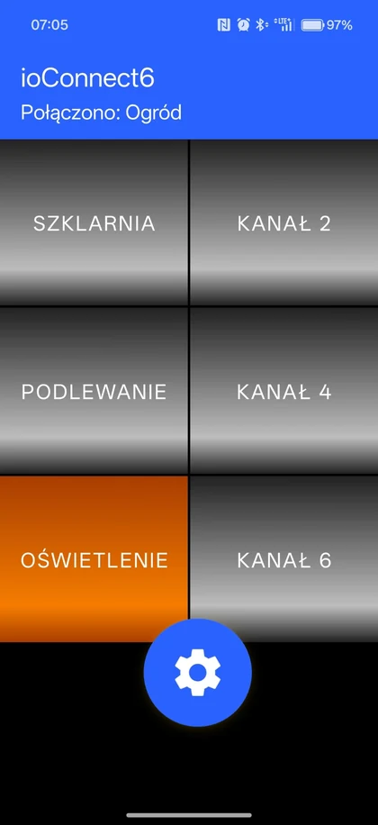
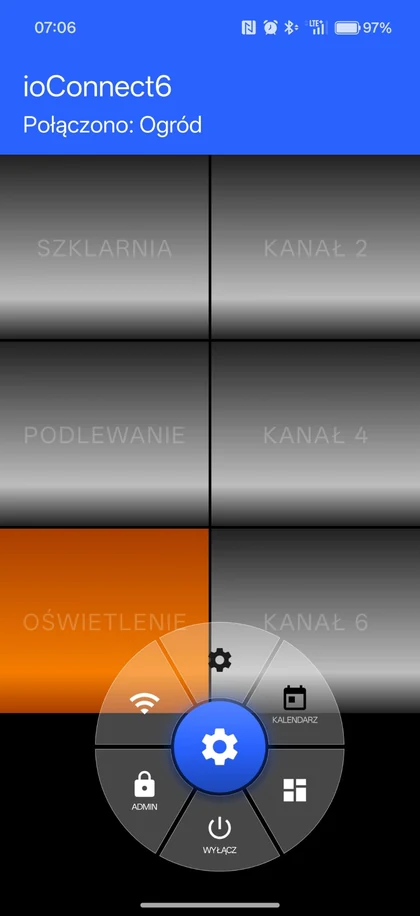
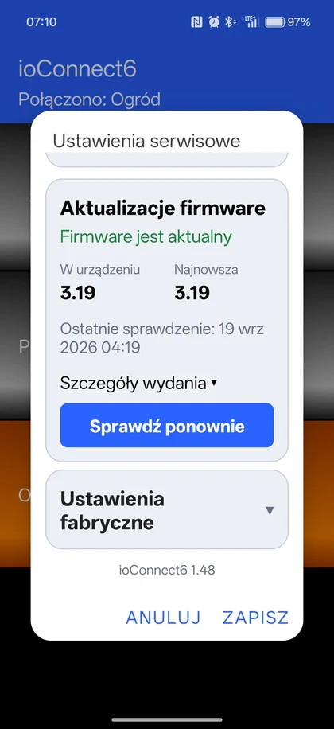

6 wyjść
Niezależne sterowanie sześcioma kanałami.
PROSTO • LOKALNIE • NIEZAWODNIE
ioConnect6 to sterownik Wi‑Fi do montażu w rozdzielnicy. Umożliwia sterowanie sześcioma wyjściami z aplikacji, pracę z wejściami fizycznymi, harmonogramy i aktualizacje OTA.

Niezależne sterowanie sześcioma kanałami.
Przycisk, przełącznik lub wyłączone.
Obsługa i konfiguracja z aplikacji.
Aktualizacja firmware bez programatora.
APLIKACJA MOBILNA
Aplikacja ioConnect6 pozwala szybko sterować wyjściami, zmieniać nazwy kanałów, korzystać z ustawień i aktualizować firmware — lokalnie, w Twojej sieci Wi‑Fi.



NAJWAŻNIEJSZE MOŻLIWOŚCI
Do domu, ogrodu, działki i małych instalacji. Lokalna kontrola bez zbędnych usług pośrednich.
Steruj urządzeniami niezależnie.
Obsługa przycisków i przełączników.
Automatyczne włączanie i wyłączanie.
Dodawanie kolejnych telefonów.
Nazwij kanały zgodnie z instalacją.
Nowe funkcje bez demontażu urządzenia.
Nowoczesne sterowanie. Prościej się nie da.
↓ Pobierz aplikację → Działa lokalnie.